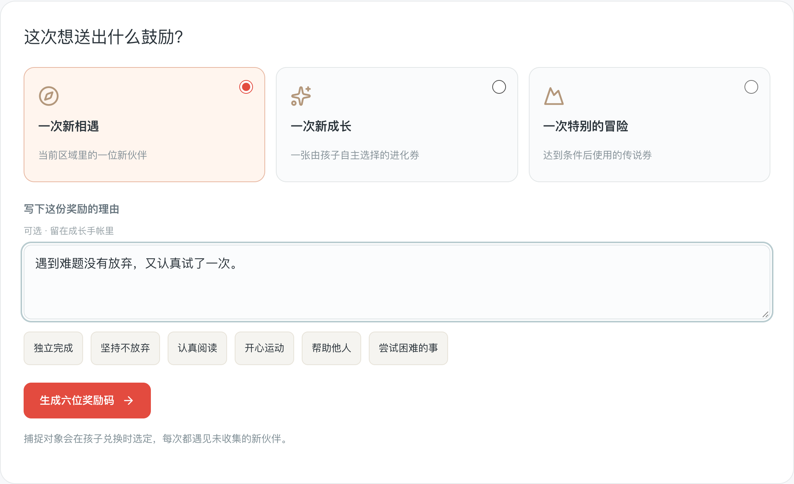
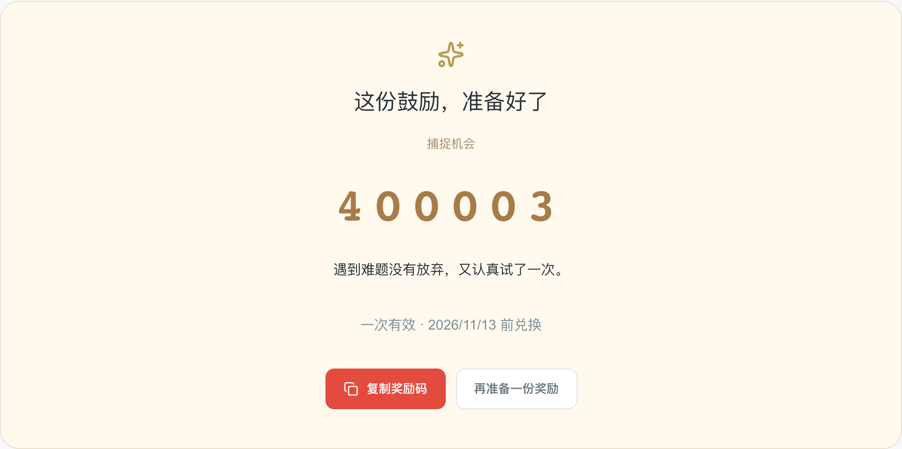
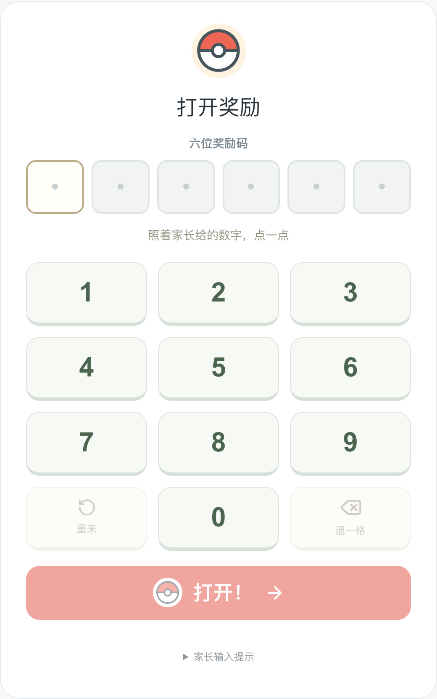
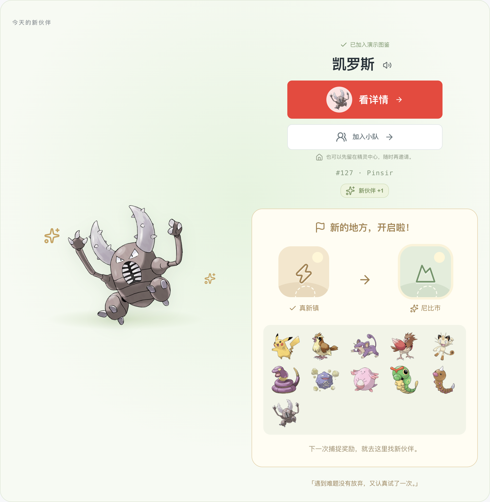
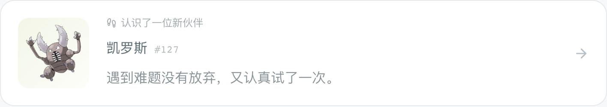
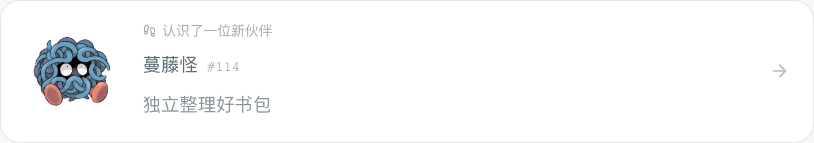
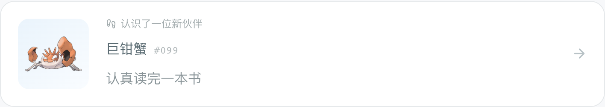
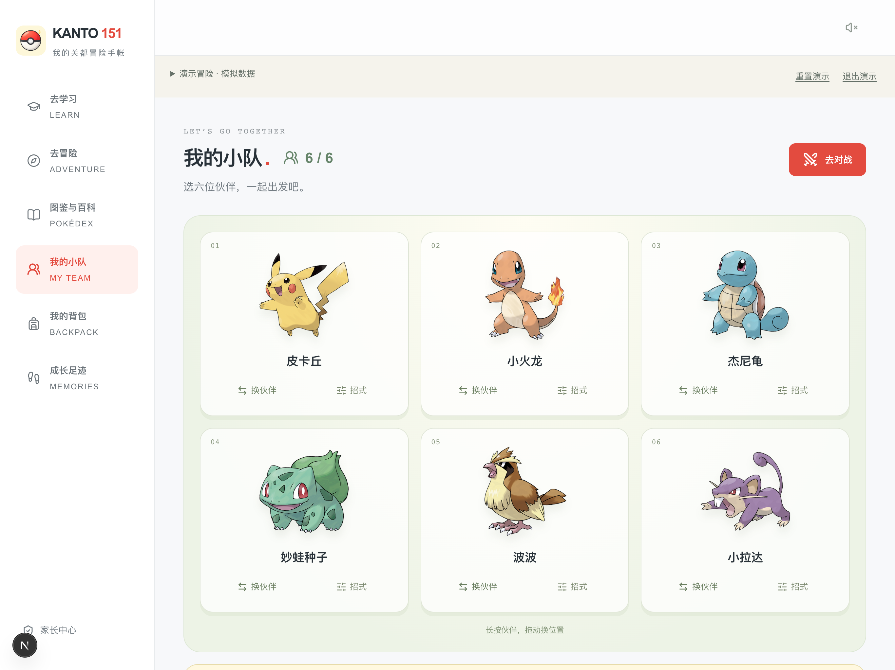
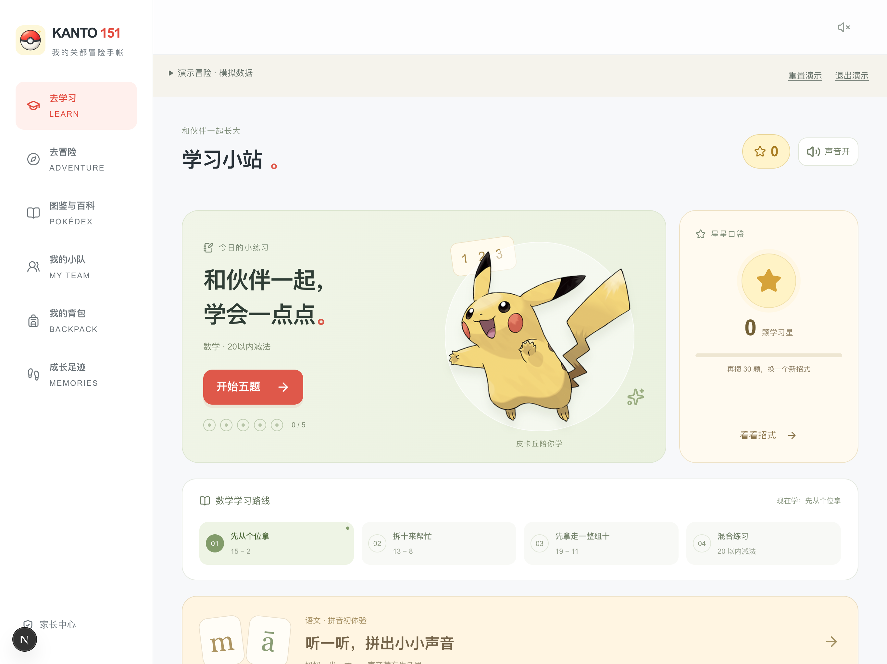
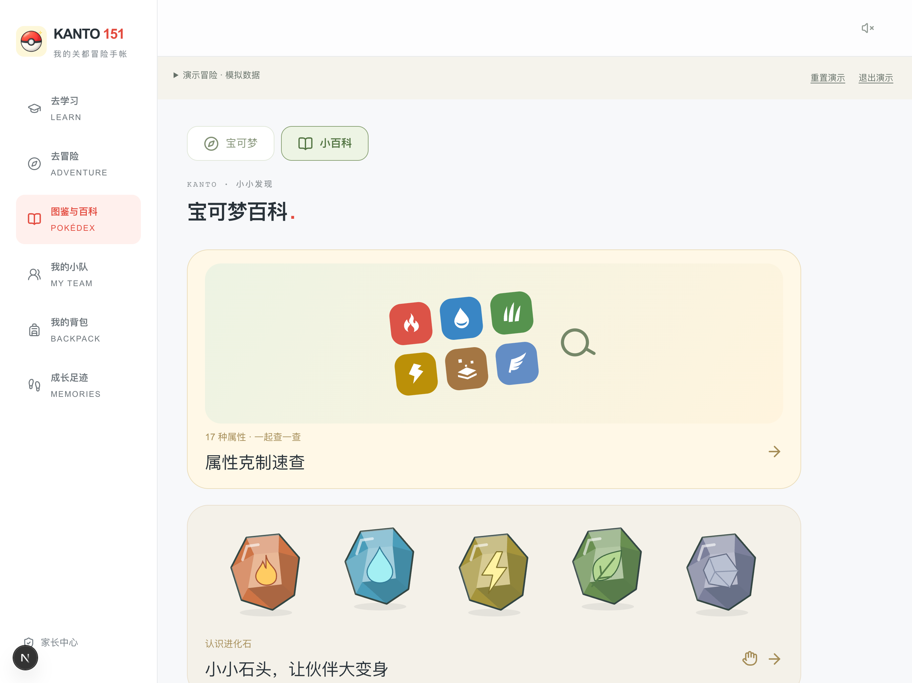

KANTO 151 · 关都冒险手帐2026 · 宝可梦 30 周年把孩子的成长变成一次宝可梦相遇。151我的童年伙伴陪他慢慢长大看见进步 → 发券鼓励 → 收集伙伴给孩子做的一本，有宝可梦陪伴的成长手帐。个人自制 · 非官方作品01 / 06
01 · 先看见，再鼓励今天的努力，我看见了。认真写下一件小事，把“你真棒”，说得更具体一点。“遇到难题没有放弃，又认真试了一次。”敢于尝试愿意坚持主动帮助真实界面 · Demo 演示数据02 / 06
02 · 让鼓励变成相遇一张奖励券，一位新伙伴。1家长发券→2孩子兑换→3遇见伙伴这份鼓励，准备好了↓收集最初的 151 只宝可梦。也能用进化券，见证伙伴的新模样。真实界面 · 仅演示奖励码03 / 06
03 · 把那一天留下来记得遇见了谁，也记得为什么。奖励的理由，会和伙伴一起留在「成长足迹」里。一次坚持，认识了凯罗斯一次独立，认识了蔓藤怪一次认真，认识了巨钳蟹以后再翻到这一页，我们还能想起：“原来那天，你做到了这件事。”真实界面 · Demo 演示数据04 / 06
04 · 相遇之后，一起探索有了伙伴，还有些小乐趣。成长与收集是主线，这些是沿途的风景。TOGETHER组建小队 · 友好对战邀请喜欢的伙伴，试试各自的招式。LEARN小练习 · 攒星星数学、语文、思维，用学习星兑换新招式。DISCOVER宝可梦小百科精灵球、徽章、进化石……一起找好奇的答案。每一位伙伴，都从现实里一次被看见的成长开始。真实界面 · Demo 演示数据05 / 06
05 · 邀请你，来走一走我的童年，他的关都冒险。宝可梦 30 周年，让最初的伙伴陪伴新的成长。pokemon.yibuu.com/demo▰ iPad 横屏打开 · 开启语音当前为演示版，使用模拟数据。暂不能创建自己的家庭。你想用一张奖励券，记录孩子的哪一次成长？个人自制 · 非官方作品06 / 06